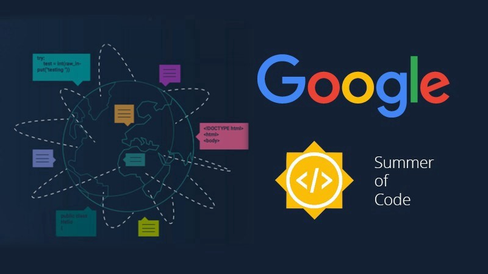

In this article, I will be sharing my experience so far contributing to the CheckStyle Project.
I will be talking a little bit about what I have learned + what I am working on right now and how I started getting involved in the community. I will also be sharing how you can get involved and start contributing to the Project.
First of all, let me introduce you to the CheckStyle Project, what is it all about, how it works, and what technology stack is being used in the Project.
Intro to the CheckStyle Open Source tool
Checkstyle is a development tool to help programmers write Java code that adheres to a coding standard. It automates the process of checking Java code to spare humans of this boring (but important) task.
Checkstyle is also highly configurable and can be used to support any coding style(for Java).
I believe that style of code becomes significantly important when it comes to working on a team project.
Checkstyle helps maintain consistent and proper code style for projects build in Java by providing different Checks for layout, code formatting, class design, method design, type checking. So, if the source code is not following a proper style or has incorrect syntax, then this tool shows violations on specific lines in those files which you can then easily rectify.
You can explore the project repository on Github. You can check out the documentation of the Project here to learn more about these checks.
Tech Stack
Checkstyle is mainly built in Java and it uses Maven/Gradle as a build tool, JUnit framework for testing, ANTLR for grammar, and parsing of Java code as AST(Abstract Syntax Tree), and many other tools/utilities that make up this amazing tool.
You can know more about the Project dependencies here.
My Open Source Journey
If I talk about my Open Source journey, I started exploring Open Source a few months back and I made a few contributions by participating in a University level Open Source program(was one of the top 50 contributors) and I really started enjoying it.
I realized that I can literally learn a lot of different technologies by contributing and get hands-on experience too!!
Currently, I am also participating in Girlscript Summer Of Code 2021 which is a 3-month Open Source Program held in India to promote Open Source culture amongst young programmers. I am contributing to different projects related to web development in Python and some projects using Java.
My Experience and Learnings
I came to know about the Checkstyle project just a few months back, while looking for organizations on the GSoC 2020(Google Summer Of Code) website. I was mostly looking for projects/organizations using Java since I had been learning Java and was more comfortable with it.
I found the Checkstyle organization’s website and I really loved the idea of this project and how it can a very useful tool while working on projects in a team since it becomes really easy to maintain code quality.
I soon started exploring this tool and started getting involved in the community’s mailing list and Gitter channel(You can find these on the official GSoC website here). I also started contributing to beginner-friendly issues.
My First Contribution
Talking about my first contribution, it was to update the example of AST(Abstract Syntax Tree) in the Javadoc documentation. Don’t worry, it might seem a little overwhelming at first, but you will get a little familiarized with the codebase!
I worked on a couple of these issues and it helped me understand how to use CheckStyle on any project from the CLI. It helped me understand the Project structure and I also learned about ASTs(Abstract Syntax Tree).
An AST is a tree representation of the syntax of the source code in a programming language. You can learn more about them here.
Next, I went a level-up and worked on some of the GSoC second issues. Now, Checkstyle is a very well-tested tool with Unit Tests, pitests, regression checking written for each check and CI tests (used to analyze its source code by running Checkstyle itself!).
As I had mentioned previously, CheckStyle has different checks implemented (like indentation, header, import, block checks, type checks, etc) for checking the source code(written in Java) of any project.
So, for this issue, I had to update a specific Test for a check to have it use unique input files(these files are used to test each of the check’s functionality) for every method in the Test.
What I learned after resolving these issues
By resolving this issue, I learned a little bit about Unit testing and TDD using the JUnit framework.
I learned that in TDD, we write tests to test the functionality of code(for eg:- an instance method) and compare the expected and actual cases of output to determine whether the code does what it should do in the first place.
I also learned about different properties and configurations based on which the checks actually verify source code and report violations.
What am I working on right now/current learnings?
Currently, I have started working on different variety of issues and getting a little deeper understanding of this tool, the different checks that Checkstyle provides, and also how to properly test your code for different edge cases.
I am currently learning about the different tools used in the Project like XPATH(syntax used to navigate XML elements/nodes), pitests, Unit testing with JUnit.
So, pitests are basically mutation tests used to check how good the test coverage is, and it creates mutations in the code (deliberately break the code).
By doing this, we ensure that all tests cover our code completely and that certain redundant cases could be removed to keep the source code clean and precise.
This might seem a little overwhelming but trust me it gets very interesting as you deeply explore the project. I am also learning about how I could configure this tool and use it in my own projects.
Currently, I am looking to get a deeper understanding of what each check does, understand their code, and resolve bugs related to specific checks(like indentation, Javadoc, block checks, etc). I will also be looking to add tests while resolving these bugs.
How you can get involved and start contributing to Checkstyle?
- Before getting started, you should first set up your development environment and clone the Project locally. You can follow this documentation. You can clone the project from the Github repository. Also, join the community channel on Gitter and the mailing list, as you can ask for help if you face issues while contributing.
- After you set up the project, I would suggest you either install the jar file for Checkstyle from here or you can install the Checkstyle extension for your IDE(check this out). If you install the jar file then you can play around with this Project using the CLI(which is easier) or if you installed the IDE extension then you can use it in your IDE.
- Read the documentation(to know more about the tool and also you can get answers to your questions/doubts there most of the time) and go through some beginner-friendly issues by filtering issues according to issue labels on Github.
- Keep contributing and exploring the tool by picking up different types of issues.
Checkstyle has a number of CI tests that run tests on your PR branch. So, if some of these tests fail, you can have a look at the logs that are generated or you can also ask for help on the Gitter channel.
Another thing that I would suggest is to look up similar issues to what you are working on and have a look at the PRs for those issues. This would help you a lot to understand what you have to do in those issues. The mentors/maintainers of the organization are super helpful and supportive and have been maintaining this Project actively.
You can also watch this video, to understand more about how to get started and contribute to Checkstyle.
This was all about my journey so far contributing to Checkstyle and I am going to share more about it as I keep contributing and learning different stuff, in the next part of this blog post.
So stay tuned for this!!
Thanks for reading and feel free to share this post with others if they want to get started contributing to Open-source.
Feel free to reach out to me:
Github
Student Ambassador Profile
Or if you feel more comfy to mail, I am glad you can write here too devansuyadav@gmail.com
← All Posts